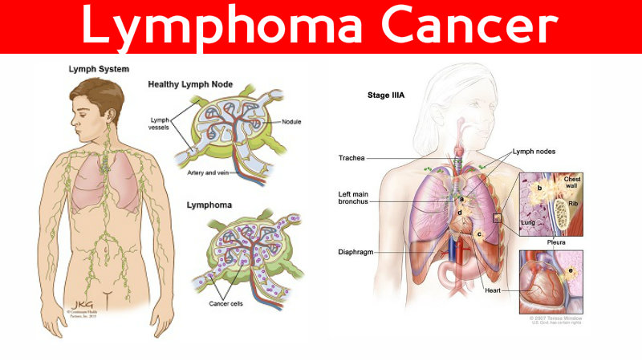

Lymphoma is a group of blood cell tumors that develop from lymphatic cells. The name often refers to just the cancerous ones rather than all such tumors.Signs and symptoms may include enlarged lymph nodes, fever, drenching sweats, unintended weight loss, itching, and feeling tired.The enlarged lymph nodes are usually painless. The sweats are most common at night.
There are dozens of subtypes of lymphomas.The two main categories of lymphomas are Hodgkin lymphomas (HL) and the non-Hodgkin lymphomas (NHL).